IFN es una aplicación multiplataforma de escritorio desarrollada por InGeSur srl a través del Proyecto InBio para el Dirección General Forestal (Ministerio de Ganadería, Agricultura y Pesca de Uruguay) para el proceso, administración y consulta de dato datos obtenidos en campo del Inventario Nacional Forestal.
Fue desarrollada en Python utilizando el framework Web2Py- y puede ser utilizada en sistemas operativos Windows (XP, Vista y 7), GNU/Linux, Mac OSX, etc. y cualquier explorador moderno.
La aplicación funciona en modo local (en una sola máquina) o en modo de red (puede ser accedida en red, desde varias máquinas) y permite que los usuarios registrados en el sistema (adminsitradores y usuarios) puedan ingresar a través de un navegador web la información obtenida en campo para el Inventario Forestal. Sobre esos datos, se realizan consultas, con salidas a gráfico, tablas y/o mapas. Además, permite la gestión de los envíos de punto de muestreo, y el ingreso de los datos relevados por la aplicación LIFN.
Para la ejecución de esta aplicación, debe entrar en un explorador web y redirigirlo a la dirección IP y puerto en donde se encuentra la aplicación IFN. Su dirección debería tener el siguiente formato:
- xxx.xxx.xx.x:xxxx/ifn/
Para el ingreso del sistema, entrar a la dirección IP y puerto donde se encuentra la aplicación.
Para ingresar, debe dirigirse a la esquina superior derecha, en donde se encuentra Login y ingresar en la opción de Login que se encuentra en el menú desplegable.
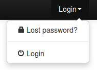
Al hacer click en la opción de Login, se muestra una ventana con los campos necesarios para realizar el login. El usuario debe completarlos y luego hacer click en el botón Login.
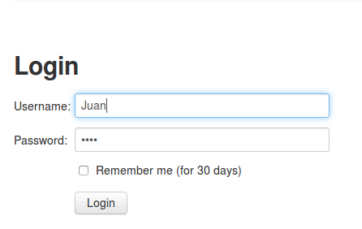
Si sus datos son correctos, se ingresará al sistema. De lo contrario se le pedirá al usuario que corrija sus datos.
En esta sección se detallan las categorías de consultas posibles, donde se pueden encontrar, como se realizan las consultas y que salidas tienen. Se trata de secciones (Suelo, Fauna, etc.) en donde se pueden realizar distintas consultas sobre los datos relevados por el inventario forestal nacional.
A continuación se listan todas las categorías existentes con las consultas que pueden realizar cada una, además de los filtros que se pueden aplicar. Además de los filtros y agrupaciones posibles para cada una de las categorías, cada categoría cuenta con filtros de datos según año en que se realizó el muestreo, región, departamento y/o subcuenca en donde se encuentra el punto.
Bosque Nativo: Nombre de la Consulta Definición Agrupado por Salidas Abundancia Absoluta Número de individuos de la especie sobre el número de individuos totales Ninguno Excel Abundancia Relativa Abundancia Absoluta de cierta especie sobre la sumatoria de Abundancias Absolutas de todas las especies, representada en porcentaje Ninguno Excel Frecuencia Absoluta Número de Puntos de Muestreo en que aparece cierta especie sobre el número total de puntos de muestreo Ninguno Excel Frecuencia Relativa Frecuencia Absoluta de cierta especie sobre la sumatoria de Frecuencias Absolutas de todas las especies, representada en porcentaje Ninguno Excel Dominancia Absoluta Área Basal de la especie sobre la sumatoria de las áreas basales de las especies Ninguno Excel Dominancia Relativa Dominancia Absoluta de cierta especie sobre la sumatoria de Dominancias Absolutas de todas las especies, representada en porcentaje Ninguno Excel Características Cualitativas Según Género y Especie Nombre de Género y Especie, altura, DAP promedio, área basal y volumen por altura total de todos los árboles de bosques nativos Ninguno Excel IVI (Índice de Valor de Importancia) Cálculo del IVI (Abundancia Relativa + Frecuencia Relativa + Dominancia Relativa sobre 3) para cada Especie Ninguno Excel Lista de Puntos de Muestreos Nativos Listado de los nombres de puntos de muestreos en donde se encuentran bosques nativos Ninguno Excel Lista de Especies Nativas Encontradas Listado de los nombres de las especies encontradas en los puntos Ninguno Excel Lista de Especies Nativas Encontradas Por Punto de Muestreo Listado de los nombres de las especies encontradas en los puntos según el punto de muestreo Ninguno Excel Tabla de Existencias por Árbol Nombre del punto de muestreo, número de árbol, especie, DAP promedio, altura, área basal, área basal por hectárea, volúmen total, volúmen total llevado a la hectárea de todos los árboles Ninguno Excel Tabla de Existencias Promedio por Especie Especie, DAP promedio, altura, área basal, área basal por hectárea, volúmen total, volúmen total llevado a la hectárea de todos los árboles Ninguno Excel
Bosque Plantado: Nombre de la Consulta Definición Agrupado por Salidas Listado de Nombres de Parcelas con su Espesor Listado de todos los arboles mostrando el nombre de su punto, a la parcela que pertenecen, sus DAP y el espesor de corteza Ninguno Excel Listado de Géneros y Especies Encontradas Listado de los géneros y especies encontradas en todos los bosques plantados Ninguno Excel Características Cualitativas Nombre del punto, especie, género, rango de edad, raleo, altura de poda, distancia entre filas, distancia entre árboles, adaptación de la especie, régimen, estado general. Ninguno Excel Tabla de Existencias Consulta que devuelve los valores correspondientes a áreas y volumenes ocupados según los bosques plantados. PARA REALIZAR ESTA CONSULTA SE DEBE SELECCIONAR UN FILTRO Según Árbol (cálculo para todos los árboles), Según Parcela (suma agrupando según la parcela en que se encuentren), Según Punto Muestreo (suma los resultados de un punto de muestreo), Expandido a la Hectárea por Parcela (lleva la consulta Según Parcela a la hectárea), Volúmen Total por Hectárea por Punto Muestral (lleva la consulta Según Punto Muestreo a la hectárea). Luego estos pueden ser agrupados por género plantado. Excel Volúmen Total Promedio por Hectárea Según Género Plantado Listado de los géneros y especies encontradas en todos los bosques plantados Ninguno Excel
Forestación, Mantenimiento y Estructura: Nombre de la Consulta Definición Agrupado por Salidas Frecuencia de Origen de Plantación Es la cantidad de ocurrencias del origen de la plantación Según Género Plantado, Según Género y Especie Excel, Gráfico de torta o barra. Frecuencia de Estructura Es la cantidad de ocurrencias de la esctructura de la plantación Según Género Plantado, Según Género y Especie Excel, Gráfico de torta o barra. Frecuencia de Plan de Manejo Es la cantidad de ocurrencias de la plan de manejo en la plantación Según Género Plantado, Según Género y Especie Excel, Gráfico de torta o barra. Frecuencia de Grado de Intervención Es la cantidad de ocurrencias del grado de intervención en la plantación Según Género Plantado, Según Género y Especie Excel, Gráfico de torta o barra. Frecuencia de Destino de la Madera Es la cantidad de ocurrencias del destino de la madera en la plantación Según Género Plantado, Según Género y Especie Excel, Gráfico de torta o barra. Frecuencia de Manejo Silvicultural INTERMEDIO Es la cantidad de ocurrencias del Manejo Silvicultural INTERMEDIO en la plantación Según Género Plantado, Según Género y Especie Excel, Gráfico de torta o barra. Frecuencia de Tecnología de Explotación Es la cantidad de ocurrencias de la Tecnología de Explotación en la plantación Según Género Plantado, Según Género y Especie Excel, Gráfico de torta o barra.
Productos No Madereros: Nombre de la Consulta Definición Agrupado por Salidas Tipo de Ganado Es la cantidad de ocurrencias del tipo de ganado en los puntos de muestreo Según Género Plantado Excel, Gráfico de torta o barra. Intensidad de Pastoreo Es la cantidad de ocurrencias de la Intensidad de Pastoreo en los puntos de muestreo Según Género Plantado Excel, Gráfico de torta o barra. Sistemas de Producción Es la cantidad de ocurrencias de los Sistemas de Producción en los puntos de muestreo Según Género Plantado Excel, Gráfico de torta o barra. Producción Apícola Es la cantidad de ocurrencias de la Producción Apícola en los puntos de muestreo Según Género Plantado Excel, Gráfico de torta o barra. Sombra Es la cantidad de ocurrencias de Sombra en los puntos de muestreo Según Género Plantado Excel, Gráfico de torta o barra. Rompe Vientos Es la cantidad de ocurrencias de Rompe Vientos en los puntos de muestreo Según Género Plantado Excel, Gráfico de torta o barra. Recolección de Hongos Es la cantidad de ocurrencias de Recolección de Hongos en los puntos de muestreo Según Género Plantado Excel, Gráfico de torta o barra.
Suelo: Nombre de la Consulta Definición Agrupado por Salidas Drenaje Es la cantidad de ocurrencias del drenaje en los puntos de muestreo Según Género Plantado Excel, Gráfico de torta o barra. Infiltración Es la cantidad de ocurrencias de la infiltración en los puntos de muestreo Según Género Plantado Excel, Gráfico de torta o barra. Frecuencia de Impedimentos Es la cantidad de ocurrencias de Impedimentos en los puntos de muestreo Según Género Plantado Excel, Gráfico de torta o barra. Frecuencia de Olor Es la cantidad de ocurrencias de Olor en los puntos de muestreo Según Género Plantado Excel, Gráfico de torta o barra. Humedad Es la cantidad de ocurrencias de Humedad en los puntos de muestreo Según Género Plantado Excel, Gráfico de torta o barra. Pedregosidad Es la cantidad de ocurrencias de Pedregosidad en los puntos de muestreo Según Género Plantado Excel, Gráfico de torta o barra. Micorrizas Es la cantidad de ocurrencias de Micorrizas en los puntos de muestreo Según Género Plantado Excel, Gráfico de torta o barra. Frecuencia Fauna del Suelo Es la cantidad de ocurrencias de Fauna del Suelo en los puntos de muestreo Según Género Plantado Excel, Gráfico de torta o barra. Frecuencia Raíces Es la cantidad de ocurrencias de Raíces en los puntos de muestreo Según Género Plantado Excel, Gráfico de torta o barra. Frecuencia Uso de la Tierra Es la cantidad de ocurrencias de Uso de la Tierra en los puntos de muestreo Según Género Plantado Excel, Gráfico de torta o barra. Frecuencia Uso previo del suelo Es la cantidad de ocurrencias de uso previo del suelo en los puntos de muestreo Según Género Plantado Excel, Gráfico de torta o barra. Frecuencia Tipo de Labranza Es la cantidad de ocurrencias de tipo de Labranza en los puntos de muestreo Según Género Plantado Excel, Gráfico de torta o barra. Frecuencia Grado de Erosión Es la cantidad de ocurrencias de Grado de Erosión en los puntos de muestreo Según Género Plantado Excel, Gráfico de torta o barra. Frecuencia Tipo erosión Es la cantidad de ocurrencias de tipo erosión en los puntos de muestreo Según Género Plantado Excel, Gráfico de torta o barra. Frecuencia Profundidad Primer Horizonte Es la cantidad de ocurrencias de profundidad Primer Horizonte en los puntos de muestreo Según Género Plantado Excel, Gráfico de torta o barra. Frecuencia Profundidad Mantillo Es la cantidad de ocurrencias de profundidad Mantillo en los puntos de muestreo Según Género Plantado Excel, Gráfico de torta o barra. Frecuencia Profundidad Humus Es la cantidad de ocurrencias de profundidad Humus en los puntos de muestreo Según Género Plantado Excel, Gráfico de torta o barra. Frecuencia Color Es la cantidad de ocurrencias del Color en los puntos de muestreo Según Género Plantado Excel, Gráfico de torta o barra. Frecuencia Textura Es la cantidad de ocurrencias de la Textura en los puntos de muestreo Según Género Plantado Excel, Gráfico de torta o barra. Frecuencia Estructura Suelo Es la cantidad de ocurrencias de la estructura Suelo en los puntos de muestreo Según Género Plantado Excel, Gráfico de torta o barra.
Fauna: Nombre de la Consulta Definición Agrupado por Salidas Frecuencia de Especie Es la cantidad de ocurrencias de una especie específica en todos los puntos de muestreo Ninguna Excel, Gráfico de torta o barra. Frecuencia de Especie Según Parcela Es la cantidad de ocurrencias de una especie específica en cada punto de muestreo Ninguna Excel, Gráfico de torta o barra. Lista de Tipos Encontrados Listado de todos los tipos encontrados en los puntos de muestreo Ninguna Excel, Gráfico de torta o barra. Frecuencia de Tipo Es la cantidad de ocurrencias de un tipo específico en todos los puntos de muestreo Ninguna Excel, Gráfico de torta o barra. Lista de Especies Encontradas Listado de todas las especies encontradas en los puntos de muestreo Ninguna Excel, Gráfico de torta o barra.
Cobertura Vegetal: Nombre de la Consulta Definición Agrupado por Salidas Frecuencia de Grados de Cobertura de Copas Es la cantidad de ocurrencias de Cobertura de Copas en todos los puntos de muestreo Según Género Plantado Excel, Gráfico de torta o barra. Frecuencia de Grados de Sotobosque Es la cantidad de ocurrencias de Sotobosque en todos los puntos de muestreo Según Género Plantado Excel, Gráfico de torta o barra. Frecuencia de Cobertura Herbácea Es la cantidad de ocurrencias de Cobertura Herbácea en todos los puntos de muestreo Según Género Plantado Excel, Gráfico de torta o barra.
Agua: Nombre de la Consulta Definición Agrupado por Salidas Frecuencia de Tipo de Caudal Es la cantidad de ocurrencias de Tipo de Caudal en todos los puntos de muestreo Ninguna Excel, Gráfico de torta o barra. Frecuencia de Manejo Es la cantidad de ocurrencias del Manejo en todos los puntos de muestreo Según Tipo de Caudal Excel, Gráfico de torta o barra. Frecuencia de Agua Es la cantidad de ocurrencias del Manejo en todos los puntos de muestreo Según Tipo de Caudal, Según Manejo Excel, Gráfico de torta o barra. Frecuencia de Acuacultura Es la cantidad de ocurrencias de Acuacultura en todos los puntos de muestreo Según Tipo de Caudal Excel, Gráfico de torta o barra. Frecuencia de Grado de Contaminación Es la cantidad de ocurrencias del Grado de Contaminación en todos los puntos de muestreo Según Tipo de Caudal Excel, Gráfico de torta o barra.
Generalidades de los Bosques: Nombre de la Consulta Definición Agrupado por Salidas Altura Promedio Es el promedio de las alturas a las que se encuentran los puntos de muestreo Ninguna Ninguna Frecuencia de Facilidad de Progresión Es la cantidad de ocurrencias de la Facilidad de Progresión en todos los puntos de muestreo Según Género Plantado Excel, Gráfico de torta o barra. Frecuencia de Adaptación Es la cantidad de ocurrencias de la Adaptación en todos los puntos de muestreo Según Género Plantado Excel, Gráfico de torta o barra. Frecuencia de Estado Es la cantidad de ocurrencias del Estado en todos los puntos de muestreo Según Género Plantado Excel, Gráfico de torta o barra. Frecuencia de Poda Es la cantidad de ocurrencias de la Poda en todos los puntos de muestreo Según Género Plantado Excel, Gráfico de torta o barra. Frecuencia de Raleo Es la cantidad de ocurrencias del Raleo en todos los puntos de muestreo Según Género Plantado Excel, Gráfico de torta o barra. Frecuencia de Edad Es la cantidad de ocurrencias de la Edad en todos los puntos de muestreo Según Género Plantado Excel, Gráfico de torta o barra. Frecuencia de Régimen Es la cantidad de ocurrencias del Régimen en todos los puntos de muestreo Según Género Plantado Excel, Gráfico de torta o barra. Información general de Parcelas Muestra el nombre del punto de muestreo, el género y la especie, latitud, longitud, propietario, predio, departamento y sus observaciones correspondientes Ninguna Ninguna
Relieve: Nombre de la Consulta Definición Agrupado por Salidas Frecuencia de Pendiente Es la cantidad de ocurrencias del porcentaje de la Pendiente en todos los puntos de muestreo Ninguna Excel, Gráfico de torta o barra. Frecuencia de Exposición Es la cantidad de ocurrencias de la exposición en todos los puntos de muestreo Ninguna Excel, Gráfico de torta o barra. Frecuencia de Forma de Pendiente Es la cantidad de ocurrencias de la forma de la pendiente en todos los puntos de muestreo Ninguna Excel, Gráfico de torta o barra. Frecuencia de Ubicación Es la cantidad de ocurrencias de la ubicación en todos los puntos de muestreo Ninguna Excel, Gráfico de torta o barra.
Problemas Ambientales: Nombre de la Consulta Definición Agrupado por Salidas Frecuencia de Pobre Calidad del Agua Es la cantidad de ocurrencias de la pobre calidad del Agua en todos los puntos de muestreo Según Género Plantado, Según Tipo de Bosque Excel, Gráfico de torta o barra. Frecuencia de Polución del Aire Es la cantidad de ocurrencias de la polución del aire en todos los puntos de muestreo Según Género Plantado, Según Tipo de Bosque Excel, Gráfico de torta o barra. Frecuencia de Pérdida de Fertilidad Es la cantidad de ocurrencias de perdida de fertilidad en todos los puntos de muestreo Según Género Plantado, Según Tipo de Bosque Excel, Gráfico de torta o barra. Frecuencia de Invasión de Especies Es la cantidad de ocurrencias de invasión de especies en todos los puntos de muestreo Según Género Plantado, Según Tipo de Bosque Excel, Gráfico de torta o barra. Frecuencia de Presencia de Pesticidas Es la cantidad de ocurrencias de presencia de pesticidas en todos los puntos de muestreo Según Género Plantado, Según Tipo de Bosque Excel, Gráfico de torta o barra.
Para realizar consultas sobre la base de datos, debe primero seleccionar una categoría de las disponibles. Para ello, dirijase al menú desplegable debajo de la opción Consultas. A modo de ejemplo, seleccionaremos la categoría Suelo.
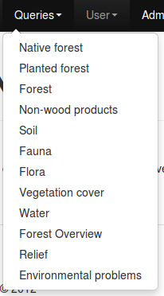
Para realizar una consulta, seleccionarla del menú desplegable y luego hacer click en consultar. Se realizará dicha consulta con los filtros seleccionados. A modo de ejemplo, se realizará la consulta de Frecuencia de Drenaje en el año 2010 en Durazno, según Género Plantado.
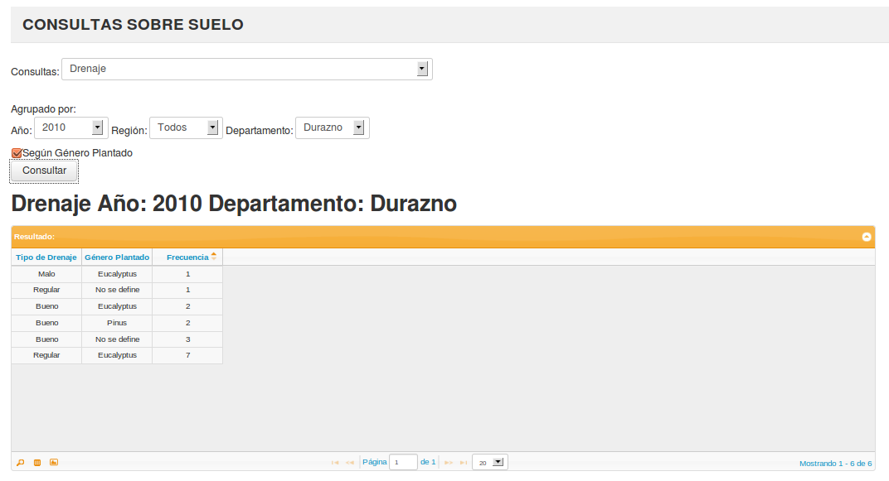
Como podemos ver, el resultado se muestra en una tabla en la misma ventana que nos encontramos, y el título de la consulta con los filtros aplicados se muestran arriba de la misma. En el caso de que los datos excedan el tamaño actual de la tabla, automáticamente se genera una paginación debajo de la tabla. Con ella, puede circular libremente por las páginas de resultados, además de configurar a través del menú desplegable la cantidad de filas que se muestran en la ventana principal. Además, se pueden ordenar las columnas de manera ascendente o descendente haciendo click en el nombre de la columna.
Esta funcionalidad permite al usuario buscar datos específicos según distintos filtros. Para utilizar esta función, debe seleccionar en primer ícono que se encuentra en la tabla, en la parte inferior izquierda.
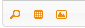
Al hacer click en el ícono, se muestra el siguiente diálogo sobre la tabla:
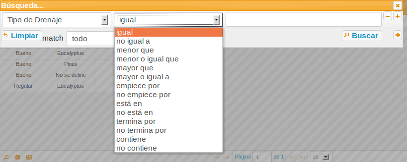
En dicha ventana, podemos filtrar los datos según condiciones impuestas por el usuario. Al seleccionar una columna, podemos imponer las condiciones listadas previamente, e ingresar un valor de filtro. Si se desea agregar mas filtros, se hace click en el botón con el símbolo de +. Luego para realizar la búsqueda, se hace click en Buscar.
- Mostrar los resultados gráficamente:
Esta funcionalidad permite visualizar los campos en un gráfico. Dependiendo de las cantidades de columnas que tenga la tabla es el tipo de gráfico que se muestra. En el caso de que el gráfico tenga dos columnas, se muestra una torta con los datos. Por otro lado, si tiene 3 columnas, se muestra un gráfico de barras.
Para mostrar el gráfico, se hace click en el último botón que se encuentra en la tabla, en la parte inferior izquierda. Al hacer click, se levanta una ventana de diálogo y se muestra el gráfico.
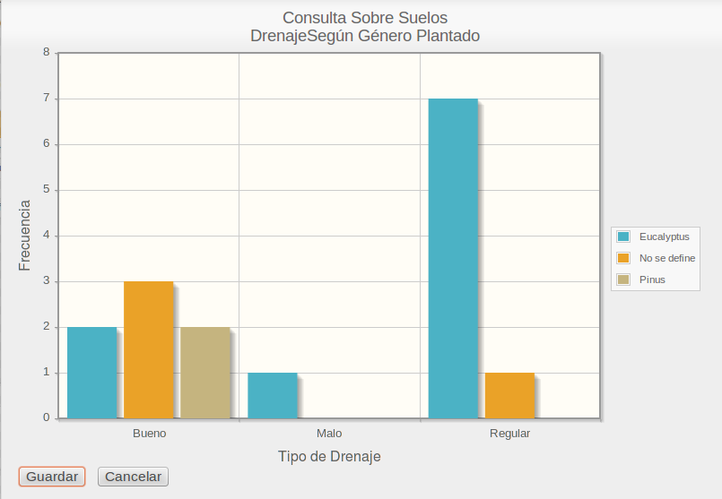
Para descargar la imagen, se hacer click en guardar y se despliega una ventana con la opción de guardar la imagen o abrirla. Para cerrar el gráfico se puede apretar la tecla Esc o hacer click en Cancelar.
- Exportar los resultados a formato excel
Esta funcionalidad permite exportar los datos de la tabla a una planilla excel. Para descargar la planilla excel, hacer click en el botón Exportar, en la parte inferior izquierda de la tabla.
Luego de hacer click en dicho botón, se despliega una ventana con la opción de guardar la imagen o abrirla.
- Mostrar los resultados georeferenciados
Para recibir los datos de la aplicación LIFN y cargarlos al sistema, nos dirijimos al menú desplegable del Administrador, y hacemos click en la opción Cargar Datos.
Al hacerlo, se mostrará la siguiente ventana:
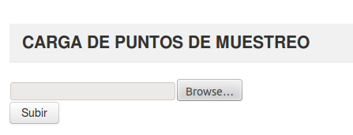Para cargar los datos, se necesita previamente el archivo .zip generado por la aplicación LIFN. Hacemos click en Buscar..., y buscamos este archivo en nuestro sistema operativo. Lo seleccionamos y hacemos click en Aceptar. Podremos ver que la ruta del archivo aparece en el campo de texto.
Luego de realizar esto, hacemos click en Subir. Al hacer esto, el programa comenzará a insertar los datos en la base de datos. Cuando finalice, los datos ingresados ya estarán disponibles para consultar.
En esta sección, se detalla como utilizar la aplicación para generar los datos para la entrega de puntos de muestreos a las empresas o personas físicas que van a realizarlos. Para hacerlo, nos dirijimos al menú desplegable del Administrador, y hacemos click en la opción Enviar Datos.
Al hacerlo, se mostrará la siguiente ventana:
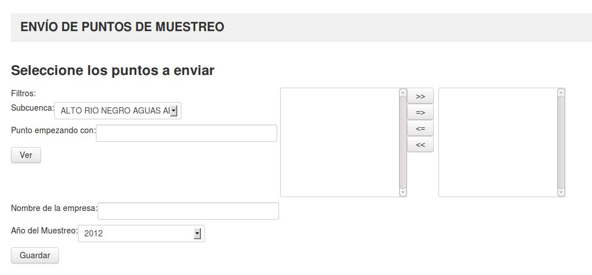
En ella, podemos ver que tenemos diferentes filtros para la selección de puntos de muestreos. Podemos filtrar los puntos por subcuenca y por el nombre. Para hacerlo, seleccionamos la subcuenca a la cual pertenece el punto, además de poder escribir con que empieza el nombre del punto. Luego de eso, hacemos click en ver, y en el panel adyacente se cargan los puntos. Para seleccionar aquellos puntos que queremos mandar podemos:
- Seleccionar un punto o multiples puntos (para hacerlo, mantenemos apretado la tecla Ctrl y clickeamos los puntos que deseemos seleccionar) del panel de la izquierda y con el botón => pasamos esos puntos al panel de la derecha.
- Para cancelar algún punto que seleccionamos por error, lo seleccionamos del panel de la derecha y con el botón <= pasa a estar en el panel de la izquierda.
- Para pasar todos los puntos, hacemos click en el botn >>
- Para cancelar todos los puntos, hacemos click en el botón <<
Luego de haber seleccionado los puntos, debemos escribir el nombre de la empresa o persona física que realizará el muestreo, además del año en que se realizará. Recuerde que solo se enviarán los puntos que se encuentren en el panel de la derecha.
Por último, hacemos click en Guardar. Al hacerlo, se despliega un diálogo para la descarga de un archivo .xml, el cual debe ser entregado a quien realizará el muestreo para luego ser ingresado en su aplicación.
Una vez que esos puntos fueron enviados, desaparecen del panel de puntos, y no reaparecen hasta ser devueltos por la empresa.
En esta sección se mostrará como se pueden visualizar las fotos y los tracks relevados en campo. Estos archivos se encuentran en el .zip generado por la aplicación de relevamiento de datos. Estos datos con subidos a través de la sección Carga de Datos, y son guardados en el disco en donde se encuentra alojada la aplicación.
Para visualizar las fotos relevadas, nos dirigimos a la sección de Media, en el menú superior de la aplicación. Allí, seleccionamos la opción Fotos. Esto nos redirije a la siguiente pantalla:
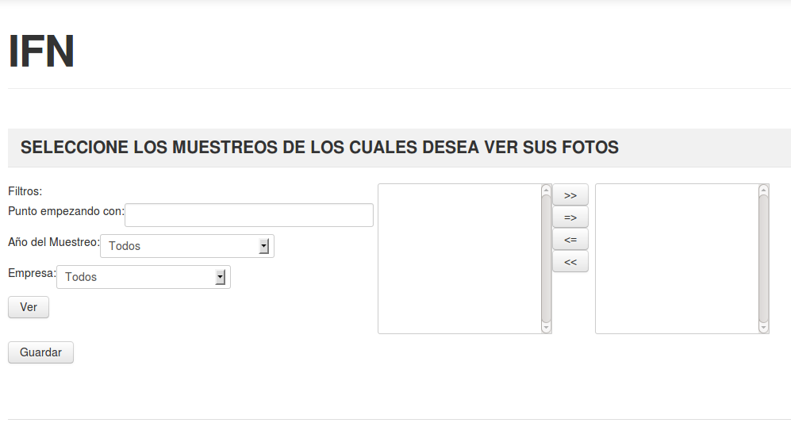
Luego de seleccionar las opciones de los filtros, (si se desea mostrar todos los puntos se selecciona la opción “Todos”) se hace click en Seleccionar. Esto carga aquellos puntos que cumplan con los filtros seleccionados. Luego de ello, debemos seleccionar los muestreos de los cuales deseamos ver sus fotos. Para ello:
- Seleccionar un muestreo o multiples muestreo (para hacerlo, mantenemos apretado la tecla Ctrl y clickeamos los muestreo que deseemos seleccionar) del panel de la izquierda y con el botón => pasamos esos muestreo al panel de la derecha.
- Para cancelar algún muestreo que seleccionamos por error, lo seleccionamos del panel de la derecha y con el botón <= pasa a estar en el panel de la izquierda.
- Para pasar todos los muestreos, hacemos click en el botn >>
- Para cancelar todos los muestreos, hacemos click en el botón <<
Luego de tener los muestreos, hacemos click en Ver. Esto nos lleva a la siguiente página:
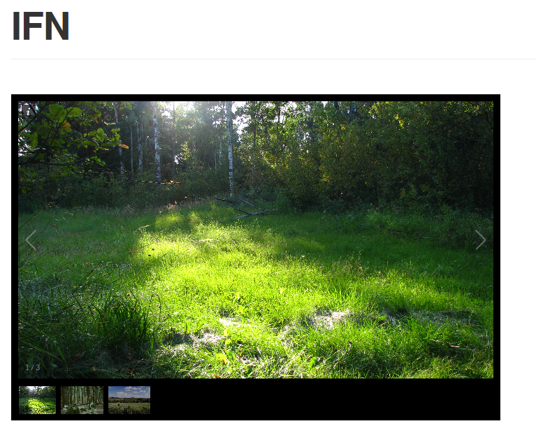
Con esta interfaz, podemos visualizar las imágenes de los puntos de muestreo seleccionados. Podemos desplazarnos entre fotos con los botones laterales a las imágenes. Además, podemos visualizar la información de la imágen haciendo click en el ícono que se encuentra en la parte superior izquierda de la imágen. Ahí, se muestra el nombre del punto de muestreo, el año en que se realizó, su latitud y longitud, y la descripción que se le anotó.
Para visualizar los tracks relevados, nos dirigimos a la sección de Media, en el menú superior de la aplicación. Allí, seleccionamos la opción Tracks. Esto nos redirije a la siguiente pantalla:
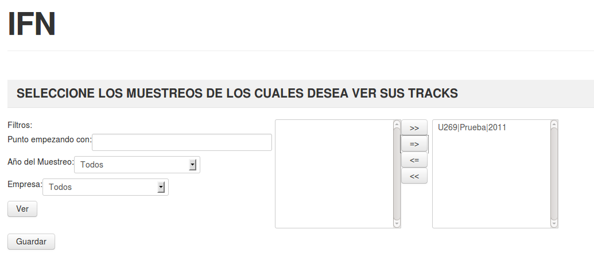
Luego de seleccionar las opciones de los filtros, (si se desea mostrar todos los puntos se selecciona la opción “Todos”) se hace click en Seleccionar. Esto carga aquellos puntos que cumplan con los filtros seleccionados. Luego de ello, debemos seleccionar los muestreos de los cuales deseamos ver sus tracks. Para ello:
- Seleccionar un muestreo o multiples muestreo (para hacerlo, mantenemos apretado la tecla Ctrl y clickeamos los muestreo que deseemos seleccionar) del panel de la izquierda y con el botón => pasamos esos muestreo al panel de la derecha.
- Para cancelar algún muestreo que seleccionamos por error, lo seleccionamos del panel de la derecha y con el botón <= pasa a estar en el panel de la izquierda.
- Para pasar todos los muestreos, hacemos click en el botn >>
- Para cancelar todos los muestreos, hacemos click en el botón <<
Luego de tener los muestreos, hacemos click en Ver. Esto nos lleva a la siguiente página:
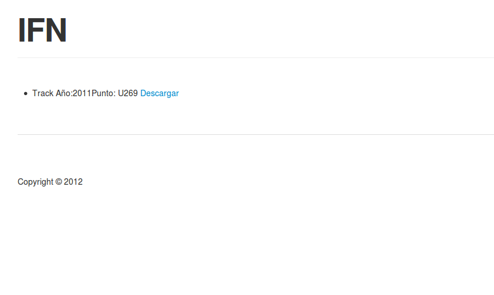
Aquí se listan todos los archivos de tracks relacionados con los puntos de muestreos seleccionados previamente. Para descargar cierto archivo, solo basta con hacer click sobre el hipervínculo de Descargar, y la descarga comenzará inmediatamente.